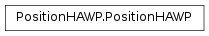
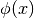
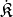
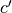
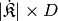
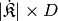

PositionHAWP¶
About the PositionHAWP class¶
The WaveBlocks Project
@author: R. Bourquin @copyright: Copyright (C) 2010, 2011, 2012, 2013, 2014, 2015, 2016 R. Bourquin @license: Modified BSD License
Inheritance diagram¶
Class documentation¶
-
class
WaveBlocksND.PositionHAWP[source]¶ This class implements the computation of the action of the position operator
 applied to a Hagedorn wavepacket
applied to a Hagedorn wavepacket  .
.-
apply_position(wavepacket, *, component=None, as_packet=True)[source]¶ Compute the effect of the position operator
on the basis
functions  of a component  of the Hagedorn wavepacket .
of the Hagedorn wavepacket .Parameters: - wavepacket (A
HagedornWavepacketBasesubclass instance.) – The wavepacket containing . - component (Integer or
None.) – The index of the component .
of the component . - as_packet (Boolean, default is
True.) – Whether to return a full packet.
Returns: A list of length
 or a single pair of extended basis shapes
or a single pair of extended basis shapes  and new coefficients
and new coefficients  .
If requested, copies of the original wavepacket are returned with these new values set.
There are
.
If requested, copies of the original wavepacket are returned with these new values set.
There are  packets, one for each space variable component
packets, one for each space variable component  of the position operator.
of the position operator.- wavepacket (A
-
apply_position_component(wavepacket, component)[source]¶ Compute the effect of the position operator
on the basis functions
of a component of the Hagedorn wavepacket .Parameters: - wavepacket (A
HagedornWavepacketBasesubclass instance.) – The wavepacket containing . - component (Integer.) – The index of the component .
Returns: Extended basis shape  and new coefficients  for component
. The coefficients are stored column-wise with
one column per dimension  . The array is of shape
.
. The array is of shape
.- wavepacket (A
-